방송통신기사 (2019-03-09 기출문제)
1과목: 디지털 전자회로
1. 다음 중 정전압 회로에 대한 설명으로 옳은 것은?
- 입력신호의 에너지를 증가시켜 출력 측에 큰 에너지의 변화로 출력하는 회로
- 교류전압을 사용하기 적당한 직류전압으로 변환하여 주는 회로
- 출력 내에 포함되어 있는 리플성분을 제거시켜 일정한 크기의 전압을 유지시키는 회로
- 입력전압, 출력부하 전류 및 온도에 상관없이 일정한 직류 출력 전압을 제공하는 회로
(정답률: 49%)

2. 바이어스(Bias) 전압에 따라 정전 용량이 달라지는 다이오드는?
- 제너(Zener) 다이오드
- 포토(Photo) 다이오드
- 바렉터(Varactor) 다이오드
- 터널(Tunnel) 다이오드
(정답률: 63%)
3. 다음 정전압 회로에서 출력전압(Vo)으로 맞는 것은? (단, VZ = Vf 이다.)
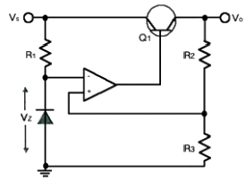
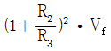
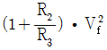
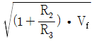
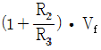
(정답률: 51%)
4. 궤환을 걸지 않았을 때 전압 이득이 30이고 고역 차단 주파수가 20[kHz]인 증폭기에 궤환을 걸어 전압 이득이 20으로 되었다면, 궤환 시의 고역 차단 주파수는?
- 10[kHz]
- 20[kHz]
- 30[kHz]
- 40[kHz]
(정답률: 35%)
5. 다음 회로에서의 출력 파형으로 옳은 것은?
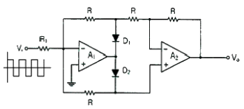
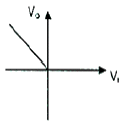
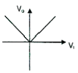
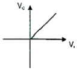
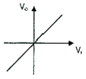
(정답률: 61%)
6. 다음 연산증폭기에서 R1=R2=100[kΩ]이고, Rf=25[kΩ], V1=2[V], V2=4[V] 일 때 출력전압 Vo는?
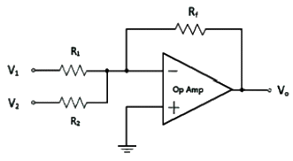
- -1.3[V]
- -1.5[V]
- -1.7[V]
- -2.0[V]
(정답률: 49%)
7. 다음은 BJT 증폭기 회로를 나타내었다. 커패시터 CE를 사용한 목적으로 적절한 것은?
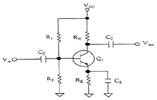
- 증폭기의 이득을 증가시킨다.
- 리플성분을 감소시킨다.
- 직류성분을 통과시킨다.
- 병렬궤환을 발생한다.
(정답률: 53%)
8. 다음 그림과 같은 회로에서 결합계수 0.5이고, 발진주파수가 200[kHz]일 경우 C의 값은 얼마인가? (단, π=3.14 이고, L1=L2=1[mH]로 가정한다.)
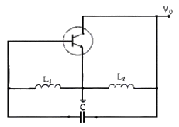
- 211.3[uF]
- 211.3[pF]
- 422.6[uF]
- 422.6[pF]
(정답률: 61%)
9. 다음 중 RC 궤환발진기의 종류 중 빈 브리지(Wien Bridge) 발진기에 관한 설명으로 옳은 것은?
- 3단으로 구성된 위상 선행회로를 궤환으로 사용하고, 기본 증폭기로는 폐루프 전압이득이 29인 반전증폭기를 사용하는 발진기이다.
- 발진기에서 발생되는 발진주파수는
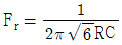
이다. - 회로에서 발진이 일어나기 위해서는 정궤환 루프의 위상천이가 0° 이고 루프이득이 0 이어야 한다.
- 사인파 발진기의 일종으로 지상-진상회로로 구성되며, 발진에 필요한 증폭기 이득은 3이다.
(정답률: 45%)
10. 발진회로와 증폭회로의 설명으로 틀린 것은?
- 발진회로와 증폭회로는 적절한 직류전원이 공급되어야 한다.
- 발진회로와 증폭회로 모두 적절한 궤환회로를 적용할 수 있다.
- 발진회로와 증폭회로는 출력파형에 왜곡이 발생할 수 있다.
- 발진회로와 증폭회로는 외부에서 입력되는 교류신호가 필요하다.
(정답률: 47%)
11. 다음 중 정보 전송에서 반송파로 사용되는 정현파의 위상에 정보를 싣는 변조 방식은?
- PSK
- FSK
- PCM
- ASK
(정답률: 60%)
12. 다음 중 AM방식과 비교한 FM방식에 대한 설명으로 틀린 것은?
- 단파 대역에 적당하지 않다.
- 수신의 충실도를 향상시킬 수 있다.
- 잡음을 보다 감소시킬 수 있다.
- 피변조파의 점유주파수대역이 좁아진다.
(정답률: 61%)
13. 다음 중 아날로그 신호로부터 디지털 부호를 얻는 방법이 아닌 것은?
- PM(Phase Modulation)
- DM(Delta Modulation)
- PCM(Pulse Modulation)
- DPCM(Differential Pulse Code Modulation)
(정답률: 45%)
14. 일정시간 동안 200개의 비트가 전송되고, 전송된 비트 중 15개의 비트에 오류가 발생하면 비트 에러율(BER)은?
- 7.5[%]
- 15[%]
- 30[%]
- 40.5[%]
(정답률: 61%)
15. 다음 중 높은 주파수 성분에 공진하기 때문에 생기는 펄스 상승부분의 진동 정도를 무엇이라 하는가?
- 새그(Sag)
- 링잉(Ringing)
- 언더슈트(Undershoot)
- 오버슈트(Overshoot)
(정답률: 63%)
16. 그림과 같은 회로의 전달 특징은? (단, VR1 ＜ VR2)
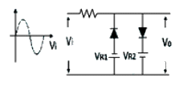
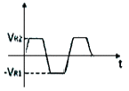
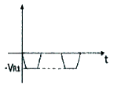
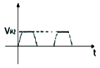
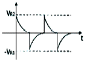
(정답률: 58%)
17. 다음 회로에서 정논리의 경우 게이트 명칭은?
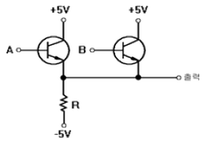
- AND 게이트
- OR 게이트
- NAND 게이트
- NOR 게이트
(정답률: 49%)
18. 2진수 1110을 2의 보수로 변환한 것으로 맞는 것은?
- 1010
- 1110
- 0001
- 0010
(정답률: 47%)
19. 다음 중 전가산기(Full Adder)에 대한 설명으로 옳은 것은?
- 아랫자리의 자리올림을 더하여 그 자리 2진수의 덧셈을 완전하게 하는 회로이다.
- 아랫자리의 자리올림을 더하여 홀수의 덧셈을 하는 회로이다.
- 아랫자리의 자리올림을 더하여 짝수의 덧셈을 하는 회로이다.
- 자리올림을 무시하고 일반계산과 같이 덧셈을 하는 회로이다.
(정답률: 53%)
20. 다음 그림과 같은 회로의 명칭은?
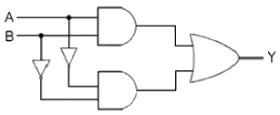
- 일치 회로
- 시프트 회로
- 카운터 회로
- 다수결 회로
(정답률: 52%)
2과목: 방송통신 기기
21. 다음 중 방송통신위원회의 「방송법」에서 정하는 음성·음향 등으로 이루어진 방송프로그램을 송신하는 방송은?
- 이동 멀티미디어 방송
- 위성 방송
- 라디오 방송
- 텔레비전 방송
(정답률: 72%)
22. 임피던스가 25[Ω]인 반파장 안테나와 특성임피던스가 100 [Ω]인 선로를 정합하기 위한 임피던스 값은?
- 150[Ω]
- 250[Ω]
- 25[Ω]
- 50[Ω]
(정답률: 72%)
23. 화상변환 규격 중 이산 코사인 변환(DCT)에 대한 설명으로 관련이 없는 것은?
- 국제적 표준으로 채택되어 있으며 디지털 비디오 데이터 압축에 사용된다.
- 자연화상의 통계적 성질에 비교적 적합하고 다른 변환방식보다도 연산량이 적어진다.
- 영문의 모스 부호처럼 발생율이 높은 데이터는 짧은 부호를 할당하고 발생율이 낮은 데이터에는 긴 부호화를 할당하는 부호화이다.
- 일반적으로 고역주파수 성분에 대한 비트 성분 배분을 적게 하기 때문에 양자화 오차가 증가하여 모스키토 노이즈(Mosquito Noise)가 발생한다.
(정답률: 60%)
24. 영상신호의 압축은 아래 항목들을 효율적으로 제거함으로써 얻어질 수 있는데 이중 관련이 없는 항목은?
- 색신호간 중복성 제거
- 공간적 중복성 제거
- 통계적 중복성 제거
- 주파수 대역별 중복성 제거
(정답률: 17%)
25. 다음 중 AM 신호의 복조기로 가장 많이 사용되는 것은?
- 비(Ratio) 검파기
- 직교형 검파기
- 경사형 변별기
- 포락선 검파기
(정답률: 77%)
26. 다음 중 지상파 디지털 라디오방송의 장점이 아닌 것은?
- 잡음과 간섭영향이 적다.
- 전력사용 효율이 낮다
- 주파수 사용효율이 높다.
- 송신설비 공동이용이 가능하다.
(정답률: 60%)
27. 다음 중 색의 3요소가 아닌 것은?
- 명도
- 색상
- 포화도
- 감도
(정답률: 68%)
28. 2,400[bps]의 디지털 신호를 전송시 한 번에 3[bit]의 신호를 전송 할 경우 이는 몇 [baud]에 해당 되는가?
- 200[baud]
- 800[baud]
- 6,400[baud]
- 7,200[baud]
(정답률: 76%)
29. 디지털 오디오 신호의 S/N[dB] 비를 정하는 관계식으로 적합한 것은? (단, n은 샘플 비트수)
- (6.02 × n) + 1.76
- (7.02 × n) + 1.76
- (8.02 × n) + 1.76
- (9.02 × n) + 1.76
(정답률: 72%)
30. 188바이트 단위의 MPEG-TS 전송패킷의 헤더 구성 요소중 첫 번째 요소는?
- Sync Byte
- Packet identifier
- Transport Priority
- Continuity Counter
(정답률: 71%)
31. 다음 중 지상으로부터 전파를 수신하여 주파수를 변환한 다음 증폭해서 다시 지상으로 발사하는 기능을 수행하는 위성은?
- 수동위성
- 능동위성
- 방사위성
- 발사위성
(정답률: 77%)
32. 다음 중 정지위성(Geostationary Satellite)의 특징이 아닌 것은?
- 1일 24시간 방송 및 통신이 가능하다.
- 3개의 위성으로 전 세계를 커버할 수 있다.
- 위성의 공전주기가 지구의 자전주기와 같다.
- 극지방 방송 및 통신이 가능하다.
(정답률: 72%)
33. 다음 중 IPTV 서비스 구조에 대한 설명으로 바르지 못한 것은?
- 서비스 플랫폼은 크게 헤드 언더, 백본 네트워크, 엑세스 네트워크, 가입자 장치의 4가지 요소로 구성된다.
- 클라이언트-서버의 구조는 단순하고 망 기능이 제한되어 있는 관계로 서비스 도입이 불편한 단점을 갖는다.
- 서비스를 위한 모든 기능은 가입자 단말과 헤드 엔더 간에 이루어지는 일종의 클라이언트-서버 모델로 동작한다.
- 망은 단순히 멀티캐스트 스트리밍의 품질을 보장하여 전달하고 필요에 따라 사용자가 원하는 채널을 엑세스 망에서 브렌칭하는 기능만을 담당한다.
(정답률: 72%)
34. 다음 중 IPTV 방송에 대한 설명으로 바르지 못한 것은?
- 영상을 인코딩한 것이다.
- 패킷화하여 인터넷 프로토콜에 연속적으로 전송한다.
- 인코딩, 패킷, 스트리밍, 디코딩 등의 기술을 필요로 한다.
- 사용자 마다 하나의 비디오 스트림이 필요한 것이 멀티캐스트 방식이다.
(정답률: 69%)
35. 사업자의 Head-end 및 네트워크 시스템의 미들웨어와 상호 구동하여 IPTV 서비스를 실제적으로 가능하게 하는 중요한 요소의 하나로 서비스로의 접속, IPTV콘텐츠 전송, 사용자의 Interaction 동작을 서버 쪽에 전달하는 기능을 수행하는 것은?
- API
- OS Kernel
- 네트워크 프로토콜 Stack
- Browser Engine
(정답률: 63%)
36. 국제표준규격으로 제정된 국내 지상파 DMB의 오디오 기술규격은?
- DAB
- TPEG
- MPEG-4 BIFS
- MPEG-4 BSAC
(정답률: 66%)
37. 다음 중 왜곡에 대한 설명으로 틀린 것은?
- 크로미넌스 비직선 이득은 크로미넌스 진폭의 변화에 따라 크로미넌스 이득이 변화하는 현상이다.
- 크로미넌스 비직선 위상은 크로미넌스 진폭의 변화가 크로미넌스 위상을 변화시키는 현상이다.
- 루미넌스 비선형은 루미넌스 진폭의 변화가 루미넌스 이득을 변화시키는 현상이다.
- 이득/주파수 왜곡은 진폭의 변화가 신호의 주파수를 변화시키는 현상이다.
(정답률: 56%)
38. 다음 중 믹싱 콘솔의 기본적인 역할이 아닌 것은?
- 영상을 보정하고 음향 크기를 조정한다.
- 효과기를 사용하여 음색을 보정하고 음향 효과를 만든다.
- 모니터 스피커나 헤드폰 등 외부기기로 보내는 신호를조절한다.
- 여러 개의 악기나 음성 등 각각의 음량을 조절하고 전체의 밸런스를 잡는다.
(정답률: 67%)
39. 프로그램을 송출하기 위한 메인 장비인 마스터 컨트롤 스위치를 자동으로 제어하는 시스템은?
- NLE(Non-Linear Editor)
- DMC(Dynamic Motion Controller)
- MHS(Message Handling System)
- APC(Automatic Program Controller)
(정답률: 83%)
40. 스위프 신호발생기(Sweep Signal Source)에 대한 설명으로 맞는 것은?
- 출력 신호와 주파수가 일정한 범위에서 반복하여 변화하는 신호발생기이다.
- 신호 레벨미터를 내장하고 있어 모든 주파수 특성을 측정하는 계측기이다.
- 점유주파수 대역폭의 허용오차를 측정하는 측정기이다.
- 2차 상호변조를 측정하여 왜곡을 분석하는 기기이다.
(정답률: 71%)
3과목: 방송미디어 공학
41. 라디오방송 편성에서 단일포맷 편성의 장점과 관련 없는 것은?
- 다양한 청취층 확보
- 프로그램 제작의 용이
- 고정 청취율 확보
- 광고주 확보 용이
(정답률: 67%)
42. 다음 중 잘못된 내용은?
- AM 라디오 주요 편성기법의 하나는 띠 편성이다.
- AM 라디오 주요 편성기법의 하나는 구획 편성이다.
- FM 라디오 주요 편성 기법의 하나는 장기간 편성이다.
- FM 라디오 주요 편성 기법의 하나는 띠 편성이다.
(정답률: 74%)
43. 우리나라에서 HLKZ TV가 민간상업방송으로서 첫 TV전파를 발사한 해는?
- 1955년
- 1956년
- 1958년
- 1961년
(정답률: 66%)
44. 다음 중 인간의 청감 특성을 설명하는 것으로 적절하지 않은 것은?
- 음량이 클수록 소리의 차이를 알기 쉽다.
- 약 4,000[Hz] 부근의 음이 가장 민감하다.
- 음량이 크면 고음이 더 잘 들린다.
- 음량이 커지면 저음은 피치가 더 높게 들린다.
(정답률: 73%)
45. 다음 중 음압 레벨(SPL) 측정에 적용되는 기준 음압으로 가장 적절한 것은?
- 0.0002[dyne/cm2]
- 0.0004[dyne/cm2]
- 0.0006[dyne/cm2]
- 0.0008[dyne/cm2]
(정답률: 75%)
46. 다음 중 마이크로폰의 제원을 표시하는 파라미터로 가장 거리가 먼 것은?
- Maximum Sound Pressure Level
- Sensitivity
- Frequency Response
- Compression Ratio
(정답률: 59%)
47. 카메라를 인간의 눈과 비슷하게 만들면서 카메라의 매커니즘을 완성시킨 장치는?
- 필름
- 원근조절기
- 셔터
- 플래시
(정답률: 75%)
48. 카메라 렌즈의 구경이 3[cm], 초점거리가 4.2[cm]일 때, f-stop은 얼마인가?
- 1.3
- 1.4
- 1.5
- 1.6
(정답률: 78%)
49. 방송용 카메라의 화상 장애 현상 중 렌즈 앞에 부착된 후드 (Hood)나 필터(Filter)의 크기가 부적당하여 사용 렌즈의 화각에 걸리거나 화상이 전체적으로 또는 모서리 부분이 어두워지는 현상을 지칭하는 용어로 가장 적절한 것은?
- 플레어(Flare)
- 색수자
- 비네팅(Vignetting)
- 구면수자
(정답률: 71%)
50. 다음 무대 조명에 의한 전환 기법 중 순간적으로 무대 조명에 불을 켜는 기교를 의미하며 매우 강한 인상을 주는 기법으로 가장 적절한 것은?
- 스위치 인(Switch In)
- 라이트 커튼(Light Curtain)
- 페이드 인(Fade In)
- 라이트 오픈(Light Open)
(정답률: 70%)
51. 다음 색상 중 인간의 감정 중에서 쾌활, 명랑, 유쾌함 등을나타내기에 가장 적절한 것은?
- 녹색
- 백색
- 황색
- 청색
(정답률: 78%)
52. 다음 중 무선 마이크 시스템의 송신회로 구성요소가 아닌 것은?
- 저주파 증폭회로
- 동조회로
- 발진회로
- 체배회로
(정답률: 47%)
53. 우리나라 지상파 TV방송 1채널의 주파수 대역폭은?
- 4[MHz]
- 4.5[MHz]
- 6[MHz]
- 8[MHz]
(정답률: 74%)
54. 다음 중 3DTV(입체영상 TV)에 대한 설명으로 틀린 것은?
- 3D 영상은 2D 영상과 달리 생동감 및 현실감을 느낄 수 있는 영상이다.
- 아직까지 시청하기 위하여 입체영상 감상용 안경과 같은 장치가 필요하다.
- 3DTV 시스템 구성요소는 콘텐츠 생성, 코딩, 전송, 디스플레이 등으로 이루어졌다.
- 현재의 HDTV보다 화질이 4배 정도 더 선명하며 향후5G 서비스와 결합될 것으로 예측된다.
(정답률: 72%)
55. 음향 기기의 출력을 나타내는 단위로 dBm을 사용하는 경우가 있으며, 1[mW]는 600[Ω]을 갖는 임피던스회로에서 0,775[V]의 전압을 갖는다. 1[V]의 전압일 때 출력을 [dBm]으로 표기하면 약 얼마인가?
- 0.11
- 0.22
- 1.11
- 2.22
(정답률: 61%)
56. 다음의 문자열을 무손실 압축했을 경우, 가능한 압축률은얼마인가?
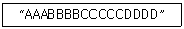
- 1/2
- 1/3
- 1/4
- 1/5
(정답률: 79%)
57. 다음 중 디지털영상 품질을 측정하기 위한 장비로서 가장 적절하지 않은 것은?
- 웨이브폼 모니터
- MPEG 분석기/모니터
- RF 신호 분석기
- 비디오 모니터
(정답률: 68%)
58. 다음 중 데이터방송의 애플리케이션 전송 방식에 대한 설명으로 틀린 것은?
- 데이터방송 서비스를 위해서는 방송망을 통해 어플리케이션을 전송하는 방송채널과 다양한 양방향 정보를 주고받을 수 있는 리턴 채널이 필요하다.
- 전송을 위해서 각각의 독립된 기본 스트림을 다중화하여 전송스트림을 만든다.
- 디지털방송에서 데이터방송서비스는 MPEG-4 시스템 규격으로 오디오, 비디오, 어플리케이션을 전송한다.
- HD지상파방송에서는 ACAP, 위성방송에서는 MHP 방식을 사용한다.
(정답률: 51%)
59. 사용자에게 높은 가용성과 고성능의 콘텐츠 전달 서비스를 제공하기 위하여 서버를 지리적으로 분산시켜 구성하는 네트워크를 무엇이라 하는가?
- ADN
- CDN
- DDN
- TDN
(정답률: 67%)
60. 다음 중 HD급보다 4배 이상 선명하고 색의 표현이 확장되었으며 HDTV보다 실제에 가까운 음향 제공이 가능한 것은?
- Smart TV
- 3D TV
- UHD TV
- FHD TV
(정답률: 79%)
4과목: 방송통신 시스템
61. 통신시스템의 출력에 있어서 기본파의 진폭이 10[V]이고, 제 2고조파의 진폭이 4[V], 제3고조파의 진폭이 3[V]일 때 송신시기의 전체 고조파 왜율은?
- 20[%]
- 30[%]
- 40[%]
- 50[%]
(정답률: 59%)
62. 다음 중 방송 프로그램 채널정보 프로토콜(PSIP 혹은 SI)과 관련이 없는 것은?
- System Time Table
- Virtual Channel Table
- Rating Region Table
- Closed Caption Table
(정답률: 69%)
63. 다음 중 직교주파수분할다중(OFDM) 방식에 대한 설명으로 옳지 않은 것은?
- 선택성 페이딩에 의해 특정한 반송파 영향으로 일부 데이터의 누락이 있는 경우에는 리드솔로몬부호, 트렐리스 부호 등으로도 오류정정은 불가능하다.
- 다수의 반송파에 데이터를 분산해서 전송하기 때문에 하나의 데이터 심볼의 계속시간이 길다.
- 가드인터벌(GI)을 설정하기 때문에 고스트에 대해서 강한 전송 방식이다.
- 다수 반송파에 의한 전송이기 때문에 전송계에 비직선왜곡이 있으면 상호변조에 의해 특성이 열화한다. 따라서 송신기의 전력증폭기에는 양호한 직선성이 요구된다.
(정답률: 56%)
64. 우리나라 지상파 디지털멀티미디어방송(T-DMB) 송신에 사용하는 주파수대는?
- 중파(MF)
- 단파(HF)
- 초단파(VHF)
- 극초단파(UHF)
(정답률: 63%)
65. 다음 중 디지털 라디오 방송시스템과 거리가 먼 것은?
- ISDB-TSB
- IBOC
- DRM
- ATSC
(정답률: 66%)
66. 다음 중 FM방식 송신기에서 사용하는 프리엠파시스(Pre-Emphasis)의 역할에 대해 옳은 것은?
- 음성 신호를 증폭한다.
- 주파수 편이량을 조절한다.
- 고역에서 신호대 잡음비를 개선한다.
- 고주파 전력을 안테나에 공급한다.
(정답률: 73%)
67. TV 프로그램 제작을 위한 영상 설비 중 여러 개의 영상신호를 합성하는 기기는 무엇인가?
- 영상스위치
- 벡터스코프
- 프레임 싱크로나이져
- 탈리 시스템
(정답률: 71%)
68. 디지털방송 시스템 정보를 포함하여 기상채널정보, 자막, 데이터방송과 같은 기타 부가서비스 정보 그리고 EPG 정보 등 DTV 서비스에 필요한 정보를 관리하는 것은?
- STT
- VCT
- DVB-SI
- PSIP
(정답률: 69%)
69. 다음은 8VSB 변조방식의 전송 프레임 구조를 나타낸다. (가)~(다)에 해당되는 것으로 옳은 것은?
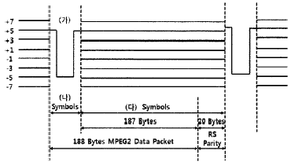
- 파일럿(pilot) 신호, 1, 207
- 필드(field) 동기 신호, 2 ,414
- 세그먼트(segment) 동기 신호, 4, 828
- 보호 구간(guard interval) 신호, 16, 3312
(정답률: 67%)
70. CATV 시스템에 사용하는 증폭기 아닌 것은?
- 간선증폭기
- 분기증폭기
- 연장증폭기
- 회선증폭기
(정답률: 68%)
71. 다음은 중계유선방송에서 사용되어지는 용어를 설명한 것이다. 틀린 것은?
- “레벨 안정도”라 함은 신호레벨이 단위시간(1초) 동안 변동한 폭을 말한다.
- “영상반송파 대 잡음비(C/N)”라 함은 해당 채널잡음에 대한 반송파의 비율을 데시벨로 나타낸 것을 말한다.
- “반송파”라 함은 방송 신호정보를 전송로에 전송시키기 적합한 형태의 신호로 변조시킨 주된 주파수신호를 말한다.
- “신호 대 잡음비(S/N)”라 함은 잡음에 대한 유선방송신호의 비율을 데시벨로 나타낸 것을 말한다.
(정답률: 62%)
72. 다음 중 CATV용 동축 케이블의 특성 임피던스는?
- 55[Ω]
- 70[Ω]
- 75[Ω]
- 80[Ω]
(정답률: 76%)
73. 다음 중 디지털 위성방송 송신시스템의 구성요소가 아닌 것은?
- MPEG-2 인코더
- 다중화기
- 등화기
- 저잡음주파수변환기(LNB)
(정답률: 67%)
74. 다음 중 위성방송을 지상에서 수신 시 단위 면적을 통과하는 전자파의 전력선 밀도 P는 약 얼마인가?(단, 전계세기 E는 197[V/m]이다.)
- 197[dBW/m2]
- 153[dBW/m2]
- 136[dBW/m2]
- 103[dBW/m2]
(정답률: 40%)
75. 방송시스템의 가입자가 시청시 스크렘블을 해제하여하 하는데 이것을 디스크렘블이라 한다. 다음 중 디스크렘블 방식이 아닌 것은?
- 자기카드를 이용하는 방식
- 방송전파를 이용하는 방식
- 전화회선을 이용하는 방식
- 전원 접지를 이용하는 방식
(정답률: 65%)
76. 이동멀티미디어방송에서 사용하는 QPSK 변조방식은 하나의 부호에 몇 개의 비트가 할당되는가?
- 2
- 4
- 16
- 64
(정답률: 65%)
77. 지상파 DMB방송의 오디오 전용 압축부호화 형식이 ISO/IEC 11172-3(MPEG-1 Audio Layer II) 또는 ISO/IEC 13818-3(MPEG-2 Audio Layer II)를 따르는 경우 그 기술기준에 해당되지 않은 것은?
- 오디오 서비스의 최대 비트율은 912[kbps]로 할 것
- 오디오 부호화기로부터 출력되는 신호의 최소 비트율은112[kbps]로 할 것
- 오디오 부호화기로부터 음성 신호의 표본화 주파수는 최대 49,000[Hz]로 할 것
- 보조 데이터 신호는 “지상파 디지털멀티미디어방송 송수신 정합 표준” 및 “지상파 디지털멀티미디어방송 데이터 송수신 정합 표준”에서 규정하는 형식을 따를 것
(정답률: 72%)
78. 다음 중 방송시설 설치시 옥외형 광 수신장치(ONU)의 설치 후 측정하는 공통시험은?
- 광원 파장 시험
- RF 조정 및 시험
- 상태감시 시험
- 주파수 응답 시험
(정답률: 47%)
79. CCTV System의 설치에는 촬상부 설치와 감시부 설치가 있다. 다음 중 공정별 촬상부 설치가 아닌 것은?
- 카메라 설치
- 팬틸트(Pan/Tilt) 설치
- 투광등 설치
- DVR 설치
(정답률: 70%)
80. 초고속 정보통신건물 인증업무의 처리지침에 홈 네트워크 건물 인증 심사기준으로 폐쇄회로 TV 장비에 배선되는 전선의 심사기준은?
- UTP Cat 3 4Pr × 1 이상
- UTP Cat 4 4Pr × 1 이상
- UTP Cat 5 4Pr × 1 이상
- UTP Cat 5e 4Pr × 1 이상
(정답률: 68%)
5과목: 전자계산기 일반 및 방송설비기준
81. 다음은 선택된 트랙(Track)에서 데이터(Data)를 Read 또는 Write하는데 걸리는 시간은?
- Seek Time
- Search Time
- Transfer Time
- Latency Time
(정답률: 62%)
82. 32비트의 데이터에서 단일 비트 오류를 정정하려고 한다. 해밍 오류 정정 코드(Hamming Error Correction Code)를 사용한다면 몇 개의 검사 비트들이 필요한가?
- 4비트
- 5비트
- 6비트
- 7비트
(정답률: 54%)
83. 2진수 7비트로 표현하는 경우 –9에 대해 부호화 절대값, 부호화 1의 보수 및 부호화 2의 보수로 변환한 것으로 옳은 것은?
- 0001001, 0110110, 0110111
- 1001001, 0110110, 1110111
- 1001001, 1110110, 1110111
- 1001001, 0110110, 0110111
(정답률: 57%)
84. 다음 중 자기보수 코드(Self Complement Code)인 것은?
- 3초과 코드
- BCD 코드
- 그레이 코드
- 해밍 코드
(정답률: 58%)
85. 다음의 데이터 코드 중 가중치 코드가 아닌 것은?
- 8421 코드
- 바이퀴너리(Biquinary) 코드
- 그레이(Gray) 코드
- 링 카운터(Ring Counter) 코드
(정답률: 75%)
86. 유일 키를 갖는 자료 1,000개가 키에 의해 오름차순으로 정렬되어 있다. 이진탐색(Binary Search) 방법으로 원하는 자료를 찾고자 할 경우 최대 몇 번의 키 비교를 해야 하는가?
- 5번
- 10번
- 500번
- 1,000번
(정답률: 64%)
87. 다음 운영체제의 방식 중 가장 먼저 사용된 방식은?
- Batch Processing
- Time Slicing
- Multi-Threading
- Multi-Tasking
(정답률: 67%)
88. 다음 보기의 기억장치 중 속도가 가장 빠른 것에서 느린 순서대로 나열한 것으로 맞는 것은?
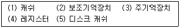
- (4)-(3)-(1)-(5)-(2)
- (4)-(5)-(3)-(1)-(2)
- (4)-(1)-(3)-(5)-(2)
- (4)-(5)-(1)-(3)-(2)
(정답률: 73%)
89. 다음 중 운영체제에 대한 설명으로 틀린 것은?
- 유닉스(Unix) : 네트워크 기능이 강력하며, 다중 사용자지원이 가능하고, PC에서도 설치 및 운용이 가능한 버전이 있다.
- 리눅스(Linux) : 무료로 다운받아 모든 분야에 무료로 널리 사용할 수 있으며, 윈도우즈와 동일한 환경을 제공한다.
- 윈도우즈(Windows) : 소스가 공개되어 있지 않으며, 많은 사용자들이 보편적으로 사용하고 있다. 서버급 보다는 클라이언트용으로 주로 사용하고 있다.
- 도스(DOS) : 명령어 입력방식으로 불편하며, DOS지원을 위해 메모리와 디스크의 용량에 한계가 있다. 여러 사람이 작업을 할 수 없다.
(정답률: 75%)
90. 메모리에 접근하지 않아 실행 사이클이 짧아지고, 명령어에 사용될 데이터가 오퍼랜드(Operand) 자체로 연산 대상이 되는 주소지정방식은?
- 베이스 레지스터 주소지정 방식(Base Register Addressing Mode)
- 인덱스 주소지정 방식(Index Addressing Mode)
- 즉시 주소지정 방식(Immediate Addressing Mode)
- 묵시적 주소지정 방식(Implied Addressing Mode)
(정답률: 71%)
91. 다음 중 방송사업자가 변경하고자 할 때 변경허가, 승인, 등록사항이 아닌 것은?
- 당해 법인의 합병
- 방송구역의 변경
- 대표자의 변경
- 방송분야의 변경
(정답률: 64%)
92. 데이터 전송 시 전압의 크기를 똑같이 하고, 위상을 45도, 135도, 225도, 315도의 4가지로 전송하는 방식은?
- QAM
- QPSK
- MPEG
- ATM
(정답률: 73%)
93. 다음 중 모노포닉 방송을 설명한 것은 어느 것인가?
- 음성, 기타 음향 신호만으로 직접 주반송파를 변조하여 행하는 방송
- 정지 또는 이동하는 실물의 순간적 영상과 이에 따르는 음성 기타 음향을 내보내는 방송
- 30[MHz]를 초과하는 주파수의 전파를 사용하여 음성, 기타 음향에 내보내는 방송으로서 텔레비전 방송에 해당하지 아니하는 방송
- 초단파 방송으로서 청취자에게 입체감을 주기 위하여 좌측신호 및 신호를 1개의 방송국으로부터 동시에 1개의 주파수의 전파로 송신하는 방송
(정답률: 54%)
94. 다음 중 주전송장치에 대한 설명으로 적합한 것은?
- 유선방송국 설비와 전송설로설비를 말한다.
- 유선방송국에서 텔레비전 방송신호를 수신하기 위한 안테나 및 증폭장치 등을 말한다.
- 유선방송신호를 증폭·조정·변환 및 혼합하여 선로에 전송하는 장치와 이에 부가된 장치를 말한다.
- 분배기 및 분기기 등에 의한 상·하향 신호의 전송손실을 보상하기 위하여 사용하는 장치를 말한다.
(정답률: 65%)
95. 다음 중 전파법상의 '위성방송업무'란?
- 공중이 직접 수신하도록 할 목적으로 인공위성의 송신설비를 이용하여 송신하는 무선통신업무
- 공중이 간접 수신하도록 할 목적으로 인공위성의 송신설비를 이용하여 송신하는 무선통신업무
- 공중이 직접 수신하도록 할 목적으로 인공위성의 수신설비를 이용하여 송신하는 무선통신업무
- 공중이 간접 수신하도록 할 목적으로 인공위성의 수신설비를 이용하여 송신하는 무선통신업무
(정답률: 71%)
96. 다음 중 용어의 정의에서 틀리게 설명된 것은?
- “전파”란 인공적인 유도에 의해 공간에 퍼져 나가는 전자파로서 3000GHz이하의 주파수를 가진 것을 말한다.
- “무선통신”이란 전파를 이용하여 모든 종류의 기호·신호·문언·영상·음향 등의 정보를 보내거나 받는 것을 말한다.
- “방송국”이란 공중(公衆)이 방송신호를 직접 수신할 수 있도록 할 목적으로 개설한 무선국을 말한다.
- “주파수재배치”란 주파수회수를 하고 이를 대체하여 주파수할당, 주파수 지정 또는 주파수 사용 승인을 하는 것을 말한다.
(정답률: 58%)
97. 디지털종합유선방송국의 주 전송장치에 사용되는 변조방식으로 맞지 않는 것은?
- OFDM
- 256QAM
- QPSK
- 8-VSB
(정답률: 31%)
98. 다음 중 음악유선방송에서 전송선로시설(동축케이블사용시)의 질적 수준의 측정 항목과 기준값에 대한 설명으로 틀린 것은?
- 신호레벨 : 50[㏈㎶] 이상
- 채널간 반송파의 레벨차 : 10[㏈] 이내
- 반송파대 잡음비(C/N비) : 28[㏈] 이하
- 전원합 변조도 : -50[㏈]
(정답률: 60%)
99. 가입차 3만 이상의 종합유선방송사업자가 확보하여야 할 종사자의 자격과 인원은?
- 전파통신기사, 정보통신산업기사, 통신선로산업기사, 무선설비산업기사, 방송통신산업기사 또는 정보통신기술자(초급이상) 2명 이상
- 전파통신기사, 정보통신산업기사, 통신선로산업기사, 무선설비산업기사, 방송통신산업기사 또는 정보통신기술자(초급이상) 1명 이상
- 정보통신산업기사, 통신선로기능사, 무선설비기능사, 방송통신기능사 또는 통신기기기능사 1명 이상
- 자격 또는 경력인정자 1명 이상
(정답률: 76%)
100. 다음 중 인터넷 멀티미디어 방송 제공 사업에 필요한 선로기반설비에 해당하지 않는 것은?
- 인공 및 수공
- 배관 및 배선반
- 통신구
- 관로 중 운용중인 관로
(정답률: 70%)